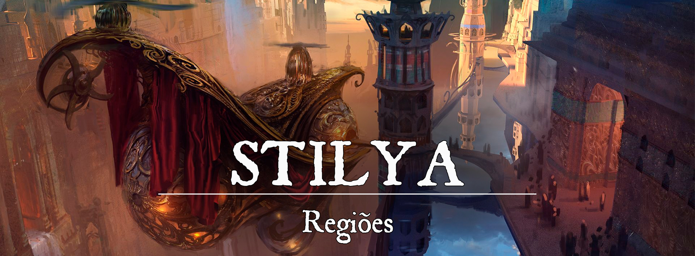

Reino de Stilya
Descrição Geral
O Reino é uma ilha rica em minerais e conhecida por sua habilidade em forjar armas e armaduras de alta qualidade. É governado por um conselho central e cada cidade do interior tem um representante local. A população é composta por várias raças, incluindo humanos, elfos, anões, halflings e gnomos. A sociedade é baseada na tecnologia avançada e na mineração, com uma classe empresarial e acadêmica respeitada e poderosa. A cultura é diversificada e sofisticada, com eventos e festivais que celebram as últimas descobertas e inovações na mineração e construção. Apesar da riqueza e progresso, a cidade enfrenta problemas com crimes nas áreas afastadas e esgotos.
5bfce7747bf10270bd90b341023e1a88.jpg|Stilya
{kind=link}
Geografia
Stilya é em sua maioria formada por planícies, com montanhas em diversos pontos da ilha, porém estas mais concentradas no norte.
Governo
Um conselho formado por 11 cadeiras regem as decisões do Reino de forma geral, sendo que cada cadeira representa um setor de necessidade ou desenvolvimento.
• Cadeira da Educação: responsável pelo sistema educacional do reino, incluindo a administração de colégios, bibliotecas e outras instituições de ensino.
• Cadeira da Saúde: responsável pela gestão do sistema de saúde, incluindo pesquisas de contenções de doenças e regulação das clínicas de cura.
• Cadeira da Justiça: responsável pela administração da justiça, incluindo o julgamento de crimes e a aplicação da lei.
• Cadeira do Transporte: encarregada da autorização de viagens e transportes navais e aéreos fora do reino.
• Cadeira da Economia: responsável pelo gerenciamento da economia do reino, incluindo a regulação de mercados, o controle da moeda e o fomento do comércio.
• Cadeira da Defesa: responsável pela proteção do reino contra ameaças internas e externas, incluindo o gerenciamento das forças do reino e controle das produções de armas de fogo.
• Cadeira das Relações Exteriores: responsável por representar o reino em relações internacionais e manter boas relações com outros reinos e nações.
• Cadeira da Ciência, Magia e Tecnologia: responsável pela fomentação e regulamentação da pesquisa e desenvolvimento em áreas como ciência, magia e tecnologia. Também gere a regulamentação do uso de magias nas cidades. E pesquisa do aprimoramento de magias para o uso cotidiano.
• Cadeira da Indústria: responsável pelo fomento e regulamentação da indústria, incluindo a produção de bens e serviços.
• Cadeira de Minas: responsável pela regulação da mineração e distribuição dos minérios e joias entre as cidades.
• Cadeira de Infraestrutura: responsável pelo gerenciamento e desenvolvimento de projetos de infraestrutura, incluindo rodovias, pontes, canais de água, iluminação e demais disposições da cidade ao aprimoramento da cidade. Também é responsável por definir até qual altura um edifício pode se erguer com segurança.
Nas cidades do interior são representadas por alguém com forte presença local que é designado pelo Reino a conduzir as necessidades e deveres.
Caráter
A maioria dos moradores de Stilya foram contagiados pela Animosidade Anã, sua maior população, ao longo do tempo e são bem receptivos aos estrangeiros. Nem tanto com forjados.
População:
A maioria da população do Reino é disputada entre Anões e Gnomos, humanos e elfos são os próximos mais presentes do reino, porém o reino possui representantes na população das mais diversas raças.
Cultura:
A cultura do Reino de Stilya é uma mistura de diversas raças, cada uma trazendo suas próprias tradições e crenças. A magia é amplamente utilizada na vida cotidiana, e há uma grande importância na educação, ciência e tecnologia. A riqueza do reino vem da mineração e forja, e existe um grande respeito pelos artesãos e forjadores habilidosos. A economia é forte e a sociedade é hierarquizada. No entanto, também há desigualdades sociais e áreas perigosas, como as periferias e subsolo da capital e as minas no interior.
O Reino de Stilya mantém uma fé em sua maioria a três principais deuses: Primus, Hephaestus e Sihir. Outras adorações existem ao longo do reino, mas nenhum dos demais templos são tão visitados quanto estes principais.
Origem
Era das Trevas
Não Descoberta.
Primeira e Segunda Era
Primeira era Stilyana
-
A ilha foi descoberta no ano 187.
-
(Anos 193~515) Stilya é um território que foi disputado por Vellum, Topázio e Lorinall séculos atrás. Devido a suas abundantes minas de joias e minerais. Guerras foram travadas durante a grande corrida da extração mas, diversas vidas também foram perdidas durante essa era. Além disso, Fortuna e Ascalon acabaram se interessando e adentrando na ilha pelo mesmo objetivo. Conquistar uma das maiores reservas minerais do mundo.
-
(Anos 292~932) Por quase dois séculos a guerra se estendeu. Até que uma conferência dos reinos foi convocada por Teodoro Steelmaker onde foi acordado entre os reinos o livre comércio e divisão territorial, onde cada reino recebeu partes de terras referente a seu tempo de envolvimento na ilha continente.
-
(Anos 933~1007) O fim da guerra trouxe prosperidade, a febre Stilyana correu o mundo através de pessoas buscando minerar, pagando taxas aos reinos proprietários das terras. E as terras do Tratado de Steelmaker foram populadas. Ferreiros foram os próximos a entrar nas terras, descobrindo que a forja na ilha era diferente, onde criar armas magníficas eram processos mais fáceis. O metal em si buscava se tornar perfeito. Mas, as armas do território se decomponham muito rápido ao serem exportadas. E isso foi conhecido como Mal de Stilya.
-
As armas produzidas em Stilya possuem uma ligação com o Plano de Mecanus, o que faz com que os minérios procurem se ordenar de forma perfeita, deixando-os mais resistentes e poderosos. Ao sair da região de ordem perfeita, o Metal adoece com um tipo de ferrugem, fazendo as armas perderem o fio com facilidade, aparecer rachaduras e quebrar pedaços com facilidade. Mesmo uma arma de enfeite em uma parede fora de Stilya, virará pó em 1 ano.
Segunda era Stilyana
-
(Anos 933~1048) E com o crescimento dos povos na ilha, a oportunidade de comércio de todo tipo trouxe cada vez mais e mais povos. As cidades da ilha de Stilya foram se tornando grandes áreas comerciais, principalmente para mineração. As fortes ferramentas de Stilya faziam o tempo gasto pelos mineiros terem o melhor rendimento.
-
(Anos 1048~1058) Com o tempo e pesquisa, ficou claro que quanto mais ao centro da ilha, melhor era a forja. Com isso o Tratado de Steelmaker foi reescrito com a criação de uma nova área, um território neutro de 5 milhas do centro da ilha. A cidade ali criada para o comércio foi nomeada como Stilya, assim como a ilha. A posteriormente considerada capital do território de Stilya cresceu de maneira abrupta e desorganizada por anos cidadãos ergueram suas casas e comércios pela cidade que se tornou muito populada em 5 anos. Porém, a desordem teve seu preço. Um incêndio devorou a cidade, que queimou por 4 semanas.
-
Nem a tentativa de todos de impedir o incêndio foi suficiente, nem um mago (O humano Nikolai Starweaver) e um druida (O humano Dorian Windrider) convocados com o pedido de socorro pararam o incêndio. Tudo foi perdido.
-
(Anos 1058~Hoje) Um mestre artesão (O anão Balin Forgefire) então resolveu apresentar um projeto de edificações. Construções que alcançariam 15 a 20 metros de altura, feitas de ferro e rocha, ou ferro e argila. Alguns artesãos então criaram a Guilda de Artesãos de Stilya, e planejaram a construção do núcleo da cidade, com seus bairros comerciais, institucionais e residenciais. Galerias de esgoto, aquedutos de água e cisternas de armazenagem.
-
E Stilya se ergueu, e além do previsto pela guilda, as construções puderam facilmente passar os 20 metros de altura. As vigas e colunas de ferro tinham as mesmas propriedades das armas e ferramentas, eram absurdamente mais fortes.
-
A cidade de Stilya continuou a crescer, e se tornou um enorme centro de tudo. Stilya recebeu o título de cidades das cidades, seus enormes bairros abrigavam cada um tipo de interesse (Industria, Comércio, Entretenimento, Estudo, etc.)
-
Os mais ricos proprietários em Stilya então, começaram a corrida vertical, tentando obter o maior edifício da cidade.
-
Enquanto isso, após a Repreensão de Mechanus (o incêndio, como ficou conhecido o evento após os estudos arcanos em Stilya), alguns estudiosos começaram a investigar o sinistro ocorrido na cidade. E descobriram sua ligação ao plano de Mechanus.
-
(Ano 1288) Uma empresa apresentou os primeiros canhões de mão, armas que arremessavam projéteis ao uso de polvora. As indrustrias Wyatt expandiram sua empresa para produzir suas armas para dentro e fora de Stilya para evitar o Mal de Stilya para suas produções para o Exterior, foi uma das pioneiras de construir seu próprio Demi-plano fábrica.
Terceira era Stilyana
-
Enquanto Stilya crescia passando as populações de diversas capitais do mundo, estudiosos da trama mágica de Mystiria começaram o estudo dessa ligação desse ponto do mundo com Mechanus.
-
(Anos 1342 até hoje) Em 1342 o Conselho Stilyano encaminhou aos reinos proprietários de terras na ilha que tais territórios seriam anexados e passariam a fazer parte do novo Reino de Stilya. Que o imposto cobrado pelos reinos nestes territórios continuariam a ser respeitados com um decaimento de 5% do total a cada ano. A maior parte dos reinos recusou a oferta e enviaram tropas para aportarem em suas terras. Porém tropas de Forjados criados em Metal (Protótipos: 1316 a 1329; Primeiros Forjados: 1330), sem consciência, aguardavam nas costas. E Stilya se defendeu do mundo comandando seus Simulacros Mecânicos a causar a menor quantidade de baixas possíveis. Os reinos tentaram por anos entrar de maneira militar em Stilya e não obtiveram sucesso, mas para dar fim à guerra, Stilya finalizou lançando suas versões protótipos de aerobarcos (Navios voadores movidos pela trama mágica de Mechanus), provando sua supremacia em equipamento dentro de suas terras. O Projeto do uso de energia em veículos já era testado secretamente no mar por anos, atiçando a curiosidade do mundo com a velocidade de navegação dos Galeões Stilyanos.
-
Forjados: Em 1315 os mineradores começaram a explorar as profundidades de Stilya (Capital), e encontraram um metal a qual nomearam de Mechanita. Esse metal consegue armazenar e conduzir magia com extrema eficiência. A partir disso os primeiros protótipos de forjados foram construídos, mas por anos criar uma máquina com uma inteligência mínima para receber comandos foi falha, criando diversos forjados defeituosos a qual eram destruídos. Depois de anos de trabalho, os primeiros forjados foram finalizados e armazenados nas galerias subterrâneas de Stilya até a declaração de independência de Stilya. Durante e após o uso dos forjados na defesa do território Stilyano alguns forjados desenvolveram consciência. Dos despertados, alguns se mantiveram em defesa do Reino, porém outros desertaram e fugiram dos seus criadores. Os Forjados que conseguiam escapar de seu serviço ao Reino e sobreviviam a fuga estavam à mercê do mundo, vários deles descobriram da pior maneira que seus corpos não suportam a vida foram de Stilya, e deterioram até sobrar apenas seus núcleos. Outros tiveram a oportunidade de substituir suas partes por outros materiais (madeira, rocha e metal não Stilyano), sobrevivendo fora da Ilha. E alguns poucos são encontrados e recrutados pela resistência, um grupo formado em por volta de 1350 para abrigar forjados desertores de Stilya. A resistência procura os planos de construção de forjados, sabotar as fábricas de construção de forjados em Stilya, libertar os forjados dos serviços forçados.
Conflito(s):
Nenhum outro Reino tem atacado Stilya a décadas, mas alguns ainda guardam rancor de sua independência. Os Forjados despertados que entraram na Resistência, ocasionalmente causam perturbação na Ordem das Cidades, sabotando fábricas de Forjados, libertando os escravos conscientes dos trabalhos forçados ou roubando armamentos.
Economia: O reino vive de mineração, tanto de metais quanto de jóias extraídas por toda ilha. A agricultura e pecuária são extremamente fracas na ilha e o reino vive de comércio para manter a alimentação. Principalmente alimentos estocáveis.
Serviços:
Interior: Limpeza de minas infestadas de criaturas, Escolta de algum metal ou joia extremamente rara.
Capital: Alguns bairros de Stilya, seus esgotos e até os túneis exclusivos abaixo da cidade são utilizados pelos criminosos e revolucionários.
O Reino vive a caça dos Revolucionários, um grupo que tenta acabar com a escravidão dos Forjados. Situações envolvendo esse ambiente podem trazer consequências políticas.
Poderio Militar: Stilya possui uma guarda de Forjados, em sua maioria sem personalidade, esses constructos são sempre comandados por algum comandante senciente, seja ele forjado ou não.
Organizações Relevantes:
Guilda do Artesãos de Stilya: Responsáveis pelos membros de todos tipo de produção, de Armas, Jóias a Edifícios, ser um membro lhe traz notoriedade na cidade. E a entrada só é permitida para ótimos criadores.
Os Cavalheiros: Uma facção mafiosa que vive de crimes voltados ao mercado negro, tráfico e extorção. Liderados por uma família de Vedalkens.
Garras Vermelhas: Criminosos violentos que vivem de roubos, assassinato e extorção. Formados inclusive por raças monstruosas (e monstros) e liderados por um Homem-Urso.
Despertados: Um grupo de revolucionários, formados por Forjados e simpatizantes, que procuram acabar com a escravidão dos Forjados.
[/p]